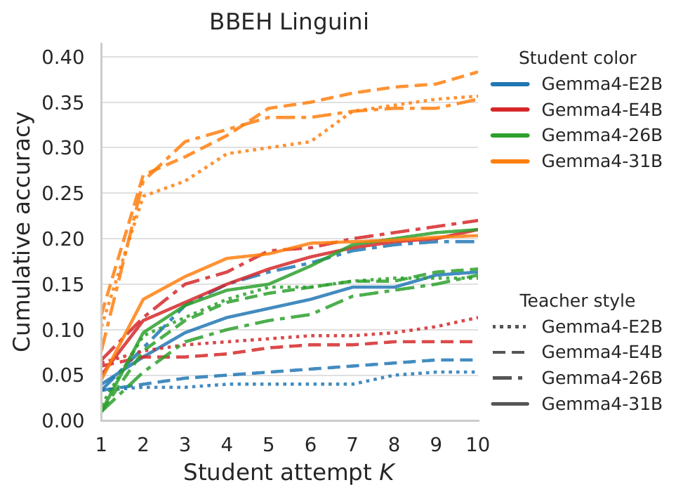

{kind=link}
Environments
Omni-MATH, Codeforces, BBEH Linguini, and ARC-AGI-1 cover mathematical reasoning, competitive programming, rule learning, and abstract grid transformations.

Language agents are increasingly used in settings where they do not answer once and stop. They write code, inspect errors, revise plans, respond to user corrections, and try again. In these interactions, feedback can be genuinely useful: it can identify what went wrong, point to a missing constraint, or suggest a better direction. But multi-turn improvement is ambiguous. A model may improve because it used the feedback, or simply because it sampled another attempt with more test-time computation.
We study multi-turn improvement with a controlled student-teacher protocol. In each episode, a student model attempts a problem. If the answer is wrong, a teacher model gives natural-language feedback without revealing the final answer, and the student revises. We compare external feedback, self-feedback, and unguided self-refinement across Omni-MATH, Codeforces, BBEH Linguini, and ARC-AGI-1, evaluating thirteen open-weight models as both students and teachers.
Our results separate trying again from using feedback. Repeated sampling explains a large part of the observed gains, while self-feedback adds little or inconsistent benefit over unguided self-refinement. Only the strongest external teachers start producing noticeable teaching lift, suggesting that useful teaching requires more than noticing that an answer is wrong: the teacher must diagnose the error, phrase a correction, and give guidance the student can actually use. Teaching may therefore be harder than verification, and possibly closer to, or harder than, generation itself. At the same time, students remain the most important factor: strong teachers can help, but multi-turn trajectories are separated mostly by students.
Feedback is central to how we want language agents to behave. A coding agent should learn from test failures. A computer-use agent should react to what changed on the screen. An assistant should revise its plan when a user points out a missing constraint. In all of these cases, the agent needs more than a correct final answer: it needs the ability to interpret feedback, decide what is actionable, preserve the parts of its previous attempt that were already right, and repair the parts that caused the failure.
But evaluating this ability is subtle. When a model improves on its second or third attempt, the improvement may not come from the feedback at all. The model may simply be resampling. It may fix the output format. It may benefit from extra inference compute. Without a repeated-attempt baseline, multi-turn accuracy can overstate how much feedback is actually being used.
There are also two different bottlenecks inside a feedback loop. The teacher may fail to diagnose the relevant mistake or phrase feedback in a useful way. Alternatively, the teacher may give a good hint, but the student may fail to translate that hint into a better solution. We therefore separate feedback generation from improving from feedback by evaluating models in both roles.
Each episode starts with a problem and a student model. The student produces an attempt, and a task-specific verifier checks whether the answer is correct. If the attempt fails, a teacher model receives the failed attempt and writes natural-language feedback without revealing the final answer. The student then tries again, conditioned on the feedback. This loop continues until the problem is solved or the interaction budget is exhausted.
The protocol is designed to separate mechanisms that are usually entangled. We vary the student, the teacher, the number of turns, the visible interaction history, and whether the teacher has access to privileged task information such as a final answer, a full solution, or execution feedback. We also compare teacher feedback against self-feedback and unguided self-refinement, where the student simply tries again without external feedback.

Omni-MATH, Codeforces, BBEH Linguini, and ARC-AGI-1 cover mathematical reasoning, competitive programming, rule learning, and abstract grid transformations.
Thirteen open-weight models are evaluated in both roles, creating dense student-teacher matrices.
We report acc@K, gain@K, normalized gain, and AUC to distinguish final performance from feedback-mediated improvement.
| Environment | Self-refinement | Self-feedback | Best feedback |
|---|---|---|---|
| Omni-MATH | 43.9 (+20.7) | 48.6 (+24.7) | 60.5 (+36.9) |
| Codeforces | 52.8 (+17.8) | 56.9 (+23.8) | 68.7 (+35.1) |
| BBEH Linguini | 12.0 (+7.6) | 10.8 (+7.7) | 21.2 (+17.5) |
| ARC-AGI-1 | 18.2 (+11.6) | 26.9 (+17.1) | 33.2 (+23.1) |
Students often improve over repeated attempts even without external feedback. This means that acc@10 alone can be misleading: some of the apparent feedback gain is really the benefit of another sample, another chance to fix formatting, or more test-time compute.
If feedback generation were much easier than solving, we might expect a model to diagnose its own failed attempt even when it could not solve the task directly. In practice, self-feedback is only modestly better than unguided self-refinement.
The largest feedback-specific gains appear when students receive feedback from the best available external teachers. This suggests that teaching is harder than verification and might even be harder than generation, in contrast to the usual generator-verifier gap.
Although teacher choice can matter a lot for a fixed student, students still have to generate the answers and be able to translate the feedback into corrected solutions.
@article{cupial2026drives,
title={What Drives Interactive Improvement from Feedback?},
author={Cupia{\l}, Bart{\l}omiej and {\L}ojek, Jan and Garstecki, Miko{\l}aj and Pob{\l}ocki, Szymon and Ziarko, Alicja and Mi{\l}o{\'s}, Piotr},
journal={arXiv preprint arXiv:2606.30774},
year={2026}
}